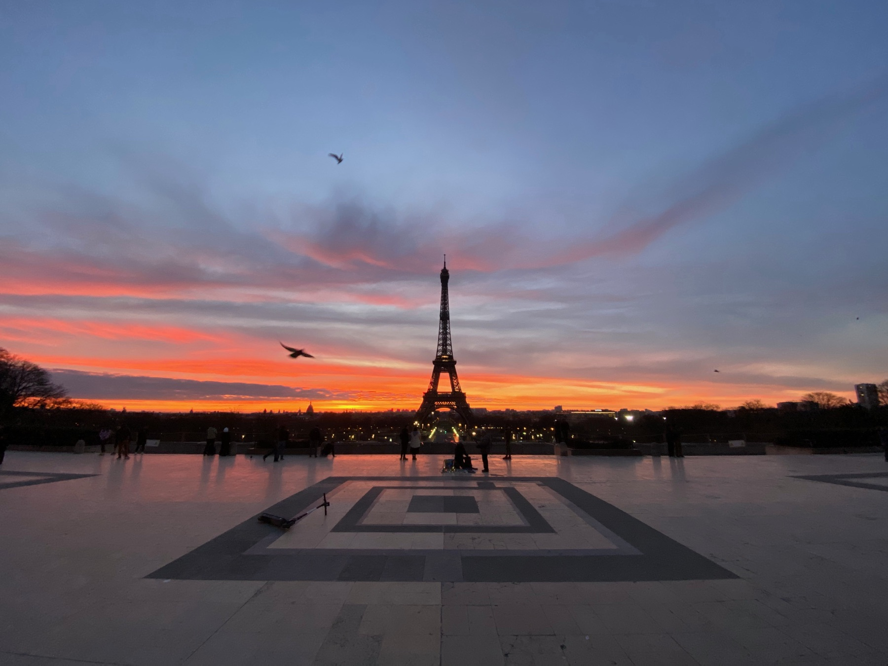

Eiffel winter
The light made the obvious view worth keeping.
The Eiffel Tower is an obvious Paris image, but the winter setting made it feel less generic: snow on branches, low light, and a softer end-of-trip mood.
This is the kind of Paris memory that does not need a complicated caption. It works because it feels like arriving at the end of a long route.

